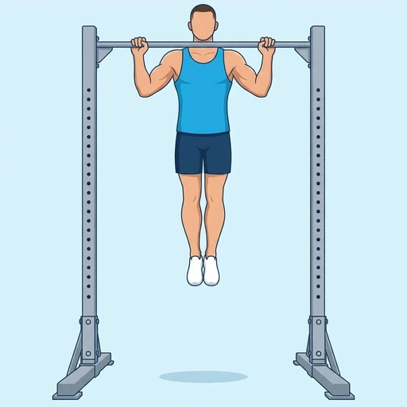

Flexed Arm Hang
A static pull-up hold in which the chin is kept above a bar with the elbows bent. It builds endurance and strength in the arms, lats and grip and is a classic stepping stone to the pull-up.
Back · Pull-Up Bar · Intermediate

Muscles worked by the Flexed Arm Hang
Primary
Secondary
Also called: bicep, biceps brachii, biceps muscle, guns, lats, lat.
Equipment
Also called: chin-up bar, chin up bar, power tower, pull up bar, doorway bar.
How to do the Flexed Arm Hang
- Grip a pull-up bar with the palms facing away, a little wider than shoulder-width, or facing you for an easier version.
- Pull yourself up, or step up on a box, until the chin is above the bar.
- Keep the elbows bent and pointing down, with the shoulders pulled away from the ears.
- Hold the position without swinging, keeping the legs together and the trunk tight.
- Lower slowly to a full hang when the chin begins to drop.
Form tips
- Keep the chin clearly above the bar; once it drops below, the hold is over.
- Squeeze the bar and pull the shoulder blades down and back.
- Step up to the top position rather than jumping if you cannot yet pull up.
At a glance
| Body part | Back |
|---|---|
| Category | Strength |
| Force type | Static |
| Mechanic | Compound |
| Difficulty | Intermediate |
| Equipment | Pull-Up Bar |
| Goals | Strength, Endurance |
| Tags | Pull day, Calisthenics, Grip focus, Knee safe, No axial load, Lower back safe |
| MET | 6.0 (metabolic equivalent, for calorie estimates) |
| Unilateral | No |
| Bodyweight | No |
| Dataset id | flexed-arm-hang |
Flexed Arm Hang in German & Spanish
| German | Beugehang |
|---|---|
| Spanish | Colgado con Brazos Flexionados |
Descriptions, instructions and tips ship in all three languages in the JSON.
Related exercises
Exercise data (JSON)
The record below is exactly what exercises.json ships for this exercise — names, descriptions, instructions and tips in English, German and Spanish.
{
"id": "flexed-arm-hang",
"name_en": "Flexed Arm Hang",
"name_de": "Beugehang",
"name_es": "Colgado con Brazos Flexionados",
"description_en": "A static pull-up hold in which the chin is kept above a bar with the elbows bent. It builds endurance and strength in the arms, lats and grip and is a classic stepping stone to the pull-up.",
"description_de": "Ein statischer Klimmzug-Halt, bei dem das Kinn mit gebeugten Ellbogen über der Stange gehalten wird. Er baut Ausdauer und Kraft in Armen, Latissimus und Griff auf und ist ein klassischer Zwischenschritt zum Klimmzug.",
"description_es": "Un mantenimiento estático de dominada en el que la barbilla se mantiene por encima de una barra con los codos flexionados. Desarrolla resistencia y fuerza en los brazos, los dorsales y el agarre, y es un paso clásico previo a la dominada.",
"category": "strength",
"force_type": "static",
"mechanic": "compound",
"difficulty": "intermediate",
"equipment": "pull_up_bar",
"body_part": "back",
"primary_muscles": [
"biceps_brachii",
"latissimus_dorsi"
],
"secondary_muscles": [
"brachialis",
"forearm_flexors",
"rhomboids",
"trapezius"
],
"goals": [
"strength",
"endurance"
],
"tags": [
"pull_day",
"calisthenics",
"grip_focus",
"knee_safe",
"no_axial_load",
"lower_back_safe"
],
"variation_group": "static-hold",
"is_unilateral": false,
"is_bodyweight": false,
"instructions_en": [
"Grip a pull-up bar with the palms facing away, a little wider than shoulder-width, or facing you for an easier version.",
"Pull yourself up, or step up on a box, until the chin is above the bar.",
"Keep the elbows bent and pointing down, with the shoulders pulled away from the ears.",
"Hold the position without swinging, keeping the legs together and the trunk tight.",
"Lower slowly to a full hang when the chin begins to drop."
],
"instructions_de": [
"Greif eine Klimmzugstange mit den Handflächen von dir weg, etwas breiter als schulterbreit, oder zu dir gedreht für eine leichtere Variante.",
"Zieh dich hoch oder steig auf eine Box, bis das Kinn über der Stange ist.",
"Halte die Ellbogen gebeugt und nach unten gerichtet, die Schultern weg von den Ohren gezogen.",
"Halte die Position ohne zu schwingen, die Beine zusammen und den Rumpf fest.",
"Senke dich langsam in den vollen Hang ab, wenn das Kinn zu sinken beginnt."
],
"instructions_es": [
"Agarra una barra de dominadas con las palmas hacia delante, un poco más abierto que la anchura de los hombros, o con las palmas hacia ti para una versión más fácil.",
"Sube tirando de ti mismo, o sube con ayuda de un cajón, hasta que la barbilla quede por encima de la barra.",
"Mantén los codos flexionados y apuntando hacia abajo, con los hombros alejados de las orejas.",
"Mantén la posición sin balancearte, con las piernas juntas y el tronco firme.",
"Baja despacio hasta colgarte por completo cuando la barbilla empiece a caer."
],
"tips_en": [
"Keep the chin clearly above the bar; once it drops below, the hold is over.",
"Squeeze the bar and pull the shoulder blades down and back.",
"Step up to the top position rather than jumping if you cannot yet pull up."
],
"tips_de": [
"Halte das Kinn deutlich über der Stange; sobald es darunter sinkt, ist der Halt vorbei.",
"Drück die Stange fest und zieh die Schulterblätter nach unten und hinten.",
"Wenn du noch keinen Klimmzug schaffst, steig in die obere Position hoch, statt zu springen."
],
"tips_es": [
"Mantén la barbilla claramente por encima de la barra; cuando baja, el mantenimiento ha terminado.",
"Aprieta la barra y lleva los omóplatos hacia abajo y atrás.",
"Si todavía no puedes hacer una dominada, sube a la posición alta con un paso en lugar de saltar."
],
"met": 6.0,
"images": {
"flat": {
"main": "images/flat/flexed-arm-hang-main.webp"
}
}
}Fetch just this exercise
const { exercises } = await fetch(
"https://exercise-dataset.com/exercises.json"
).then(r => r.json());
const ex = exercises.find(e => e.id === "flexed-arm-hang");Free for personal and commercial in-app use with attribution (“Exercise data by RepDB”) — see the license and ready-made attribution snippets. Redistributing the data as a dataset or API is not permitted.